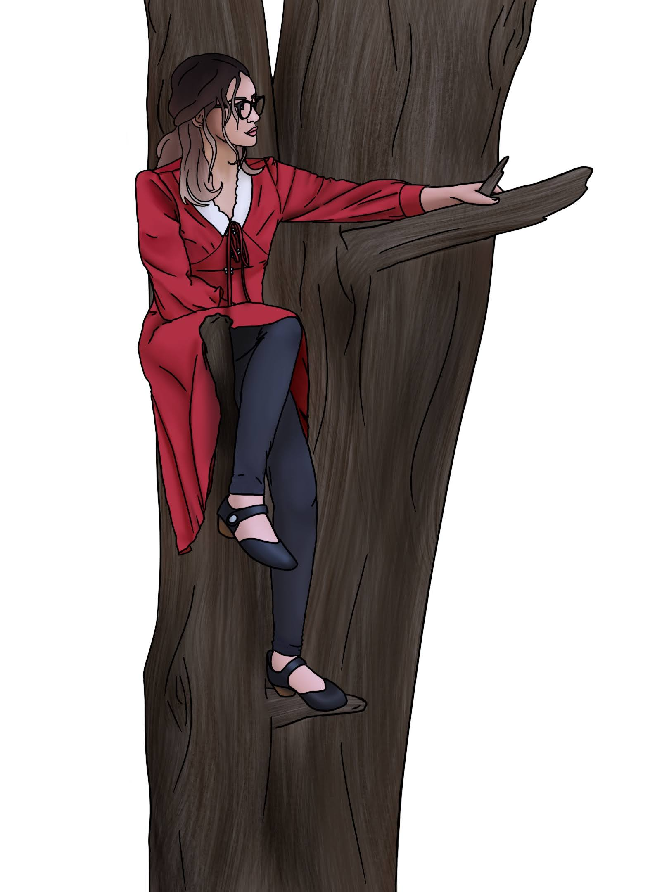
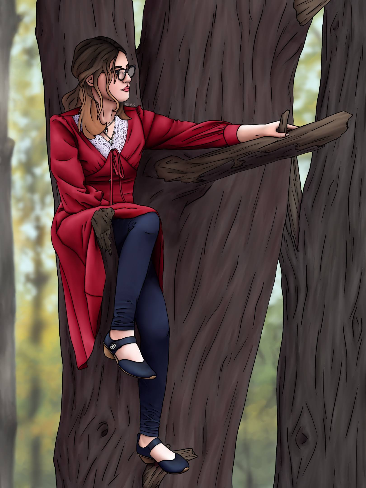

A short game created for HackUMass 2025. Two friends and I worked together to create the game from scratch in the allotted 36 hours. We collaborated to create the story, and then split the rest of the workload among us. I was repsonsible for all of the art shown in the game, including sprites and backgrounds. I did not know I would be doing this project until last minute, so all ideas were off-the-cuff and we had no time to brainstorm in advance.
Years after I originally drew this, I decided I could do better... so I did!

December 2022

September 2024